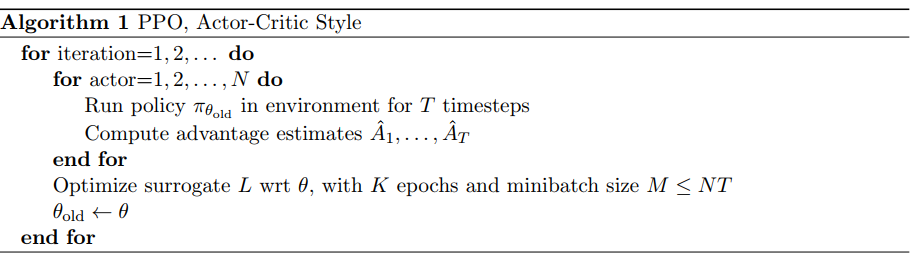

PPO算法
概述
PPO算法，该算法基于TRPO算法提出了两种改进的算法，第一种对TRPO的目标函数进行clipping操作，第二种将TRPO的约束条件变为对目标函数的惩罚。该算法和A2C算法有相似之处，比如都是同时使用多个workers进行训练然后综合他们的训练结果。算法的源代码可以在baselines里面找到。
论文概述
相关背景
策略梯度
最常见的策略梯度算法：
$$
\hat g=\hat E_t{\triangledown_{\theta}\log\pi_{\theta}(a_t|x_t)\hat A_t}\tag{1}
$$
其中$\pi_{\theta}$是一个随机策略,$\hat A_t$是在时间t对优势函数的估计。由此函数我们可以得到下面的目标函数：
$$
L^{PG}(\theta)=\hat E_t[\log\pi_{\theta}(a_t|s_t)\hat A_t]\tag{2}
$$
该方法有一个很大的缺点，会经常导致很大的策略更新，而很大的策略更新是不靠谱的。
可信域方法
在TRPO算法论文里面，目标函数是策略更新大小被限制的最大化目标：
$$
\begin{align}
&\text{maximize}_{\theta} \ \hat E_t[\frac{\pi_{\theta}(a_t|s_t)}{\pi_{\theta_{old}}(a_t|s_t)}\hat A_t] \cr
&subject \ to \ \hat E_t[KL[\pi_{\theta_{old}}(\cdot|s_t),\pi_{\theta}(\cdot|s_t)]]\le \delta
\end{align}\tag{3}
$$
其中，$\theta_{old}$是更新之前的策略参数。该问题可以在对目标函数使用线性近似和对约束使用二次近似后使用共轭梯度算法近似求解。
Clipped Surrogate Objective
我们用$r_t(\theta)$代表概率之比，即$r_t(\theta)=\frac{\pi_{\theta}(a_t|s_t)}{\pi_{\theta_{old}}(a_t|s_t)}$,$r(\theta_{old})=1$,那么TRPO的替换目标函数
$$
L^{CLIP}(\theta)=\hat E_t[\frac{\pi_{\theta}(a_t|s_t)}{\pi_{\theta_{old}}(a_t|s_t)}\hat A_t]=\hat E_t[r_t(\theta)\hat A_t].\tag{4}
$$
对于该目标函数，最大化它会导致很大的策略更新，所以我们需要对大的策略更新进行惩罚：
$$
L^{CLIP}(\theta)=\hat E_t[\min(r_t(\theta)\hat A_t,\text{clip}(r_t(\theta),1-\epsilon,1+\epsilon)\hat A_t)]\tag{5}
$$
其中$\epsilon$是一个超参数。该目标函数使用最小值来保证最后的目标函数是一个下界。
使用KL惩罚系数
对于TRPO的优化问题，里面的限制条件我们可以改为惩罚系数,具体的算法过程如下：
- 使用minibatch SGD算法经过几个epochs优化下面的KL惩罚目标函数
$$
L^{KLPEN}(\theta)=\hat E_t[\frac{\pi_{\theta}(a_t|s_t)}{\pi_{\theta_{old}}(a_t|s_t)}\hat A_t-\beta KL[\pi_{\theta_{old}}(\cdot|s_t),\pi_{\theta}(\cdot|s_t)]]\tag{6}
$$ - 计算$d=\hat E_t[KL[\pi_{\theta_{old}}(\cdot|s_t),\pi_{\theta}(\cdot|s_t)]]$
- 如果$d< d_{targ}/1.5,\beta\leftarrow\beta/2$,这里说明更新的步伐很小，惩罚变小。
- 如果$d>d_{targ}\times1.5,\beta\leftarrow\beta\times 2$，这里说明更新的步伐过大，惩罚变大。
其中的$d_{targ}$代表的是KL的目标值，是一个超参数。该方法和上面的clip方法相比效果偏差。
总体算法
PPO算法是基于策略和值函数的，最后的损失函数必然会结合两者:
$$
L^{CLIP+VF+S}(\theta)=\hat E_t[L^{CLIP}_t(\theta)-c_1L^{VF}_t(\theta)+c_2S[\pi_{\theta}](s_t)]\tag{7}
$$
其中的$c_1,c_2$是系数，S代表的是信息熵补偿，$L^{VF}_t$代表的是平方误差损失$(V_{\theta}(s_t)-V_t^{targ})^2$.
对于策略损失的计算需要估计$\hat A_t$,PPO采用如下方式进行估计：
$$
\begin{align}
&\hat A_t=\delta_t+(\gamma\lambda)\delta_{t+1}+\cdots+\cdots+(\gamma\lambda)^{T-t+1}\delta_{T-1}\cr
&其中,\delta_t=r_t+\gamma V(s_{t+1})-V(s_t)\tag{8}
\end{align}
$$
算法伪代码

该算法的流程和baselines的PPO1代码实现是一致的，先采样，然后从里面选取minibatch进行优化，和ACER等算法有细微差别。